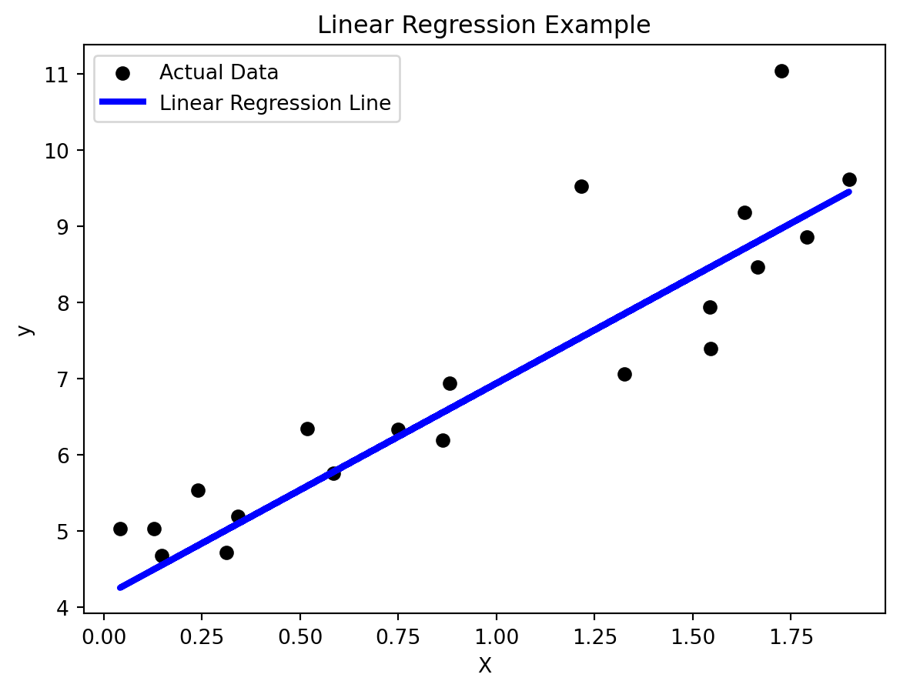
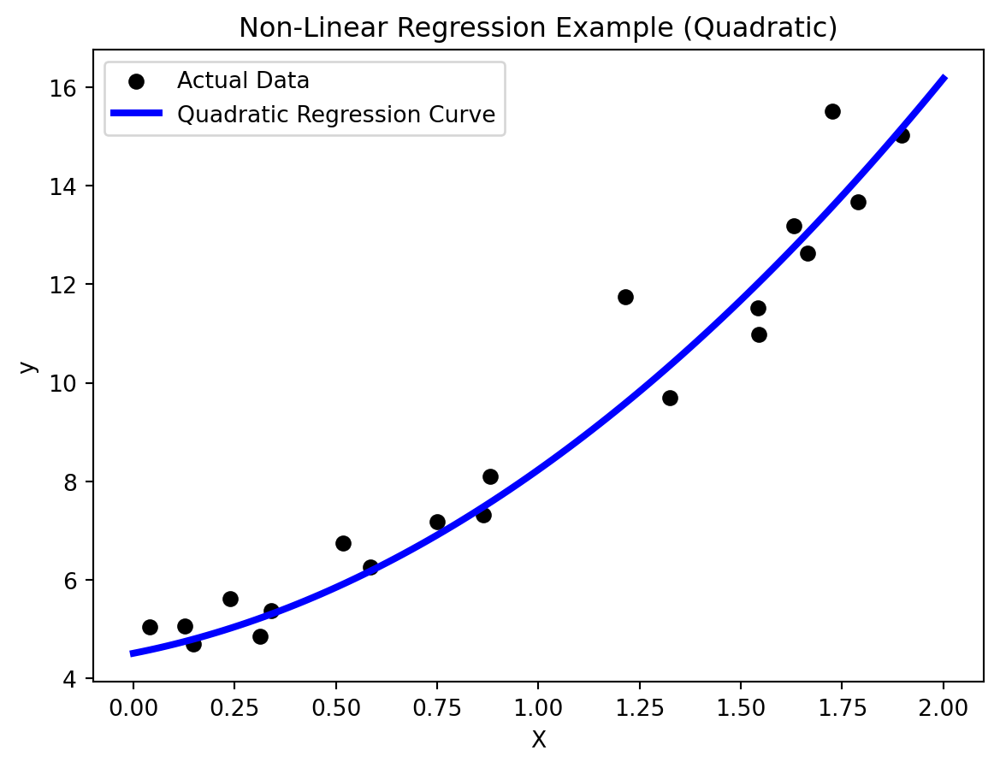

# Import necessary libraries
import numpy as np
import matplotlib.pyplot as plt
from sklearn.model_selection import train_test_split
from sklearn.linear_model import LinearRegression
from sklearn.metrics import mean_squared_error, r2_score
# Generate synthetic data for linear regression
np.random.seed(42)
X = 2 * np.random.rand(100, 1)
y = 4 + 3 * X + np.random.randn(100, 1)Introduction:
Regression analysis is a cornerstone of machine learning, providing the tools to model and understand the relationships between variables. In this blog, we will explore the twin realms of linear and nonlinear regression, uncovering their principles, applications, and the nuanced art of fitting curves to data.
Understanding Regression:
At its core, regression is a statistical method that examines the relationship between a dependent variable (output) and one or more independent variables (inputs). The goal is to create a model that captures and quantifies these relationships, enabling predictions and insights.
Types of Regression:
- Nonlinear Regression:
Linear Regression:
- Linear regression assumes a linear relationship between the independent variables and the dependent variable. The model represents this relationship with a straight line equation (y = mx + b), where “m” is the slope, and “b” is the intercept.
To practice, we’ll generate a synthetic dataset so that its easier for you to follow along.
Now, as usual, we’ll split the data into 2 sets, for training and testing.
# Split the data into training and testing sets
X_train, X_test, y_train, y_test = train_test_split(X, y, test_size=0.2, random_state=42)
# Train a linear regression model
lin_reg = LinearRegression()
lin_reg.fit(X_train, y_train)LinearRegression()In a Jupyter environment, please rerun this cell to show the HTML representation or trust the notebook.
On GitHub, the HTML representation is unable to render, please try loading this page with nbviewer.org.
LinearRegression()
Now, we make the predictions and evaluate the model
# Make predictions on the test set
y_pred = lin_reg.predict(X_test)
# Evaluate the model
mse = mean_squared_error(y_test, y_pred)
r2 = r2_score(y_test, y_pred)
# Visualize the regression line and test set
plt.scatter(X_test, y_test, color='black', label='Actual Data')
plt.plot(X_test, y_pred, color='blue', linewidth=3, label='Linear Regression Line')
plt.title('Linear Regression Example')
plt.xlabel('X')
plt.ylabel('y')
plt.legend()
plt.show()
# Display evaluation metrics
print(f'Mean Squared Error: {mse:.2f}')
print(f'R-squared: {r2:.2f}')
Mean Squared Error: 0.65
R-squared: 0.81The goal of linear regression is to find the best-fit line that minimizes the difference between the predicted and actual values, often measured using the least squares method. #### Applications: - Predictive Modeling: Linear regression is widely used for predicting numerical outcomes, such as sales forecasting or stock price predictions. - Trend Analysis: It helps identify trends and understand the strength and direction of relationships between variables.
Nonlinear Regression:
- Nonlinear regression, on the other hand, acknowledges that the relationship between variables may not be a straight line. It allows for more complex, curved, or non-linear relationships to be captured in the model.
We’ll follow similar procedure as linear regression here but with a few minor changes
# Import necessary libraries
import numpy as np
import matplotlib.pyplot as plt
from sklearn.model_selection import train_test_split
from sklearn.linear_model import LinearRegression
from sklearn.preprocessing import PolynomialFeatures
from sklearn.pipeline import make_pipeline
from sklearn.metrics import mean_squared_error, r2_score
# Generate synthetic data for non-linear regression
np.random.seed(42)
X = 2 * np.random.rand(100, 1)
y = 4 + 3 * X + 1.5 * X**2 + np.random.randn(100, 1)
# Split the data into training and testing sets
X_train, X_test, y_train, y_test = train_test_split(X, y, test_size=0.2, random_state=42)
# Polynomial regression with a quadratic term
degree = 2
poly_reg = make_pipeline(PolynomialFeatures(degree), LinearRegression())
poly_reg.fit(X_train, y_train)
# Make predictions on the test set
y_pred = poly_reg.predict(X_test)
# Evaluate the model
mse = mean_squared_error(y_test, y_pred)
r2 = r2_score(y_test, y_pred)
# Visualize the regression curve and test set
X_range = np.linspace(0, 2, 100).reshape(-1, 1)
y_range_pred = poly_reg.predict(X_range)
plt.scatter(X_test, y_test, color='black', label='Actual Data')
plt.plot(X_range, y_range_pred, color='blue', linewidth=3, label='Quadratic Regression Curve')
plt.title('Non-Linear Regression Example (Quadratic)')
plt.xlabel('X')
plt.ylabel('y')
plt.legend()
plt.show()
# Display evaluation metrics
print(f'Mean Squared Error: {mse:.2f}')
print(f'R-squared: {r2:.2f}')
Mean Squared Error: 0.64
R-squared: 0.95Non-linear regression is a powerful tool for capturing complex relationships in data. By incorporating polynomial terms, non-linear regression models can adapt to more intricate patterns. It’s essential to strike a balance to avoid overfitting, and techniques such as regularization can be employed. Experimenting with different degrees of polynomials allows for flexibility in modeling non-linear relationships in various datasets.
Applications:
- Biology and Medicine: Nonlinear regression is employed to model growth curves, drug response curves, and other biological phenomena.
- Economics: It is used to model complex economic relationships that may exhibit nonlinearity.
- Physics: Nonlinear regression is crucial for fitting models to physical processes where linear relationships may not hold.
Challenges and Considerations:
- Overfitting:
- Nonlinear models can be prone to overfitting, capturing noise in the data rather than true underlying patterns.
- Interpretability:
- Linear regression models offer straightforward interpretability, while the interpretation of nonlinear models may be more complex.
Conclusion:
In the vast landscape of machine learning, the twin siblings of linear and nonlinear regression stand as versatile tools for modeling relationships within data. Whether capturing the simplicity of a straight line or embracing the complexity of curved relationships, regression analysis remains a linchpin for extracting meaningful insights and making informed predictions in the ever-evolving world of data science.